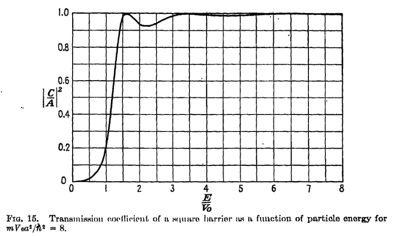

One-dimensional scattering#
So far, beyond the free particle, we have focused on bound state problems. However, an important class of experiments we need to address are scattering experiments, in which we probe the structure of some system – a metal, an atomic nucleus, and so forth – by throwing another particle at it and seeing what comes out.
Here we will consider an extremely simplistic setup in which the background probed is nondynamical (so scattering is elastic) and represented by a fixed potential of finite range. More specifically we will focus on a finite, rectangular potential barrier:
The question we want to ask is the following. Consider a particle with fixed energy \(E\) which is approaching the barrier from large negative \(x\). Its initial energy is kinetic, \(E = \half m v^2\). What happens after it hits the barrier?
Classical scattering#
Classically, this is a well defined question. For \(0 < E < V_0\), the particle will reflect off of the barrier and travel towards \(x = - \infty\).
For \(E > V_0\), the particle will pass over the barrier, although it will slow down as it passes over the top of the barrier. This latter phenomenon will lead to a time delay for the particle to reach a point past the barrier, relative to the time it would take absent any such potential. We can work out this time delay in the latter case. If the initial velocity is \(v_0 = \sqrt{2E/m}\) it would take time \(t_0 = a/v = a \sqrt{\frac{m}{2E}}\) to cross the barrier. For a barrier of height \(V_0 - E\), the velocity above the barrier is \(v_1 = \sqrt{\frac{2(E - V_0)}{m}}\), so the time to cross the top is \(t_1 = a \sqrt{\frac{m}{2(E - V_0)}}\). The time difference is thus
Note that if \(V_0 < 0\) the same basic story applies and the above formulae apply, but the particle always passes through the region of nonzero potential, time delay will be negative.
For \(E = V_0\) exactly, the velocity will become zero as soon as the particle reaches the barrier, and it will stick to the left edge at \(x = 0\).
Quantum scattering#
Quantum-mechanically the story is different in interesting ways!
The first thing we should note is that this problem (as all scattering problems) has a different character than the bound state problems we have been describing. Since the potential is short range, far from the potential barrier the particle is just the free particle. There is a state for every energy \(E > 0\) (once we properly specify the boundary conditions). The nontrivial part of the problem is specifying the boundary conditions, and finding the wavfunction as a function of the energy and those boundary conditions.
Ideally one would prepare a localized wave packet and study its evolution. In general this will both propagate and spread and the interaction with the potential barrier will be somewhat complicated. Instead we will consider the following idealization. To the left or the right of the barrier, the solutions are of the form \(e^{\pm i k x}\) where \(E = \frac{\hbar^2 k^2}{2m}\). Recall that the probability \(\rho dx = |\psi(x)|^2 dx\) that a single particle is found in an interval of length \(dx\) about position \(x\), where \(\rho\) is the probability density. Recall from Conservation of probability that this density satisfies a conservation law \(\partial_t \rho + \partial_x J\) where
If the wavefunction is \(A e^{\pm i k x}\), then \(J = |A|^2 \frac{\hbar k}{m}\). Here \(\hbar k\) is the momentum of the particle, \(\hbar k/m\) behaves as a velocity. Nowfor \(|\psi|^2\) to be a good probability density, \(A\) has units of \((length)^{-1/2}\), so \(|A|^2 v\) has units of inverse time. We can think of it as the probability per unit time that the particle crosses \(x\) from left to right (if \(k\) and thus \(v\) is positive).
More generally, we can imagine sending a flux of particles, all prepared in the same state. Then in the limit that the flux is large, \(\rho\) becomes to good approximation the particle density, and \(J\) the number of particles per second crossing \(x\).
We assume that any flux of particles coming from \(x = pm \infty\) must be prescribed. We we will consider an experiment for which the particles are injected from \(x = -\infty\). They can then pass over or be scattered from the potential barrier and travel to \(x = \pm \infty\). I claim that a good model for this is to consider wavefunctions for \(x < 0, x > a\) which take the form
where \(k = \frac{1}{\hbar} \sqrt{2m E}\). We will choose a normalization for the wavefunctions such that \(J_{inc} = |A_{inc}|^2 \frac{\hbar k}{m}\) is the incoming flux of particles. \(J_{refl} = - |A_{refl}|^2 \frac{\hbar k}{m}\) is then the flux of particles that are reflected from the barrier, and \(J_{trans} = |A_{trans}|^2 \frac{\hbar k}{m}\) is the flux of particles which are transmitted over or through the barrier. We impose as a boundary condition that the wavfunction has no combinent with momentum \(-\hbar k\) for \(x > a/2\), meaning we are not injecting particles from \(x \to \infty\). The other boundary condition is the prescription of \(A_{inc}\). These completely specify the solution to the time-independent Schroedinger equation. \(A_{refl}\) and \(A_{trans}\) (and the associated fluxes) are completely determined from \(A_{inc}\) (and its associated flux).
Because we are looking at stationary states – Eq. scattering_psi is an energy eigenstate – \(\rho\) is time-independent. We can integrate \(\del_x J\) over the barrier; it is a total derivative so that the flow on one side of the barrier is equal to the flux on the other side of the barrier: that is,
The detailed formulae arise from matching the above to the wavefunction in the barrier region. This is well described in many textbooks and we won’t dig into the details. We take our notation (and the next figure) from [Schiff, 1955]. The result for general \(E\) is
where \(\alpha = \sqrt{\frac{2m(E - V_0)}{\hbar^2}}\). Note that this formula holds for \(E < V_0\); we can then write \(\alpha = i \kappa\).
To get a sense of what is happening, let us plot the transmission coefficient, that is, the ratio of transmitted to incident flux. This is
See the plot below, for \(\frac{m V_0^2 a^2}{\hbar^2} = 8\).

For \(E > V_0\), note that the transmission becomes perfect whenever \(\alpha\alpha a = 0\), or \(\alpha a = n \pi\); this occurs when the barrier is an integer number of half-wavelengths. Note that at \(V = E_0\), \(\alpha \sin \sqrt{E - V_0}\), so that \(\sin^2\alpha a/(E - V_0)\) goes to a constant. The full coefficient is:
which is nonzero, unlike the classical case.
Note further that the transmission coefficient is nonzero even when \(E < V_0\). Here \(\sin\alpha a = - i \sinh\kappa a\); the \((-i)^2\) term in trans_coeff cancels the change of sign in \(E - V_0\). The result is:
To build some intuition, take \(\kappa a \gg 1\), which can happen when \(a\) or \(V_0\) gets large at fixed \(E\). In this case \(\sinh \kappa a \sim \half e^{\kappa a}\) becomes exponentially large and dominates the denominator in \(T\). The resulting expression is
this exponential suppression with the width (and square root of the height) of the barrier is characteristic of tunneling/below-barrier transmission. Note that \(\kappa = \frac{\sqrt{2m(V_0 - E)}}{\hbar}\) so the exponential has a non-analytic dependence on \(\hbar\) if we scale \(\hbar \to 0\).